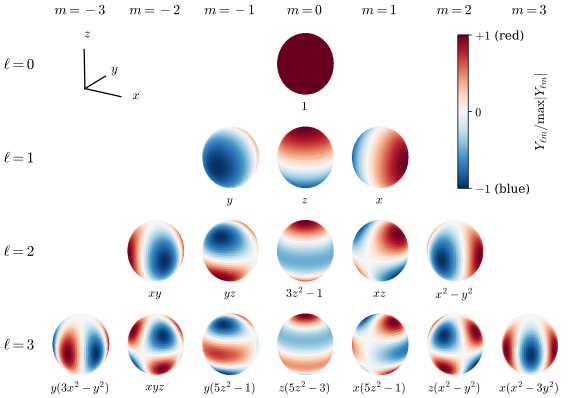
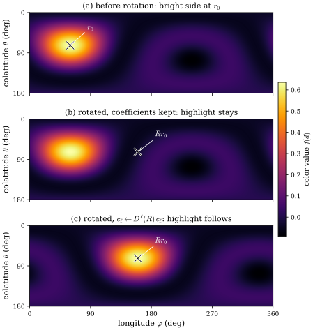
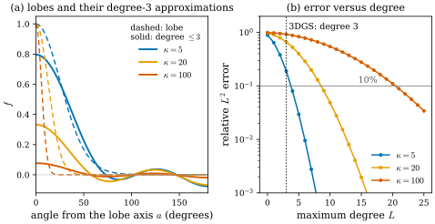

29.6 View-Dependent Color: Spherical Harmonics
Goals
- view-dependent color가 sphere \(S^2\) 위의 함수임을 이해하고, spherical harmonics가 \(S^2\)의 Laplace–Beltrami operator의 eigenfunction(eigenvalue \(-\ell(\ell + 1)\), degree \(\ell\)마다 \(2\ell + 1\)개)임을 설명할 수 있다.
- 3DGS가 degree 3까지의 16개 함수 × RGB = 48개의 coefficient로 색을 쓰는 방식을 설명하고, 푸리에 급수에 빗대어 degree가 “주파수”라는 것을 말할 수 있다.
- 장면이나 Gaussian을 회전하면 SH coefficient를 degree별 orthogonal matrix \(D^\ell(R)\)로 돌려야 한다는 것을 보이고, \(\ell = 1\) 블록이 \(R\) 자신임을 확인하며, \(D^\ell(R)\)을 least squares로 구할 수 있다.
- degree 3이 low-pass filter라서 날카로운 highlight를 표현하지 못한다는 것을 수치로 말할 수 있다.
Prerequisites
- Section 0.8: sphere의 metric \(g = d\theta^2 + \sin^2\theta\,d\varphi^2\)(Example 0.8.2(b), \(r = 1\)), \(\grad\), \(\Delta = \divg\grad\). Section 0.4의 Laplace–Beltrami operator
- Section 0.6: \(\mathrm{SO}(3)\)와 회전
- 미적분: 푸리에 급수(원 위의 함수를 \(\cos k\vartheta, \sin k\vartheta\)로 전개), spherical coordinates, 다항식
- Section 29.5: Gaussian의 parameter 가운데 SH coefficient 48개
Motivation
Section 29.5의 parameter 표에서 가장 많은 자리를 차지한 것은 색이었다(59개 가운데 48개). 3DGS의 Gaussian은 보는 방향에 따라 색이 달라진다. 반짝이는 표면의 highlight, 빛을 받는 쪽과 받지 않는 쪽의 차이 같은 효과를 담기 위해서다. 보는 방향은 단위벡터 \(d\), 곧 sphere \(S^2\)의 점이다. 그러므로 Gaussian 하나의 색은 \(S^2\)에서 \(\R^3\)(RGB)으로 가는 함수다.
함수를 parameter 몇 개로 저장하려면 basis가 필요하다. 원 위의 함수에는 푸리에 급수가 있다. \(\cos k\vartheta, \sin k\vartheta\)는 \(d^2/d\vartheta^2\)의 eigenfunction이고 eigenvalue \(-k^2\)이 “주파수”를 잰다. 처음 몇 항만 쓰면 천천히 변하는 부분만 남는다. sphere에서 같은 역할을 하는 것이 spherical harmonics(구면조화함수)이고, 그 바탕은 Section 0.8에서 metric으로 정의한 Laplacian이다. 이 절은 세 질문에 답한다. spherical harmonics는 기하적으로 무엇인가? Gaussian을 돌리면 그 coefficient는 어떻게 되는가? degree 3으로는 무엇을 표현할 수 없는가?
기호 하나를 미리 정해 둔다. 이 절에서 \(\ell\)은 spherical harmonics의 degree다. (29.2.4)와 Section 29.5의 log-scale \(\ell_i = \log s_i\)와는 다른 뜻이고, 이 절에는 log-scale이 나오지 않는다. \(\varphi\)도 이 절에서는 경도만 뜻한다.
The Laplace–Beltrami Operator on \(S^2\)
Riemannian manifold 위에서는 metric으로 gradient와 divergence를 정의하고, 그 합성 \(\Delta = \divg\grad\)을 Laplace–Beltrami operator(라플라스-벨트라미 연산자)라 한다(Section 0.8, 부호는 이 study set의 규약 \(\Delta = \divg\grad\)이다). 단위 sphere의 metric \(g = d\theta^2 + \sin^2\theta\,d\varphi^2\)(\(\theta\)는 colatitude, \(\varphi\)는 경도)에서는
이다. 이 식은 (0.8.1)의 성분 \(g_{\theta\theta} = 1\), \(g_{\varphi\varphi} = \sin^2\theta\)과 volume form \(\sqrt{\det g} = \sin\theta\)에서 나오는 좌표 공식이다(Section 21.6). 두 가지가 중요하다. 첫째, \(\Delta_{S^2}\)는 metric만으로 정의되므로 sphere의 회전(isometry)과 교환한다. 곧 \(\Delta_{S^2}(f \circ R^{-1}) = (\Delta_{S^2}f) \circ R^{-1}\)이다. 둘째, 부분적분(divergence theorem)에 의해 \(\int f\,\Delta g\,dA = \int g\,\Delta f\,dA = -\int\inner{\grad f}{\grad g}\,dA\)이므로 \(\Delta_{S^2}\)는 symmetric이고 eigenvalue는 \(0\) 이하다.
Spherical Harmonics Are Eigenfunctions
Proposition 29.6.1 (spherical harmonics). \(P\)가 \(\R^3\)의 homogeneous polynomial of degree \(\ell\)이고 harmonic(\(\partial_x^2P + \partial_y^2P + \partial_z^2P = 0\))이면, 그 \(S^2\)로의 제한 \(Y = P|_{S^2}\)는
를 만족한다. 이런 \(Y\)들의 공간 \(\mathcal H_\ell\)은 \(2\ell + 1\)차원이고, \(\ell \ne \ell'\)이면 \(\mathcal H_\ell\)과 \(\mathcal H_{\ell'}\)은 \(\int_{S^2}Y\,Y'\,dA = 0\)이라는 뜻에서 orthogonal하다. \(\mathcal H_\ell\)의 orthonormal basis를 \(Y_{\ell m}\) (\(m = -\ell, \dots, \ell\))로 쓰고 degree \(\ell\)의 (real) spherical harmonics라 부른다. 모든 \(\mathcal H_\ell\)을 합하면 \(S^2\) 위의 square-integrable 함수를 근사할 수 있다(completeness. 여기서는 증명하지 않는다 [Ramamoorthi01]).
Derivation. spherical coordinates에서 \(\R^3\)의 Laplacian은 \(\partial_r^2 + \tfrac2r\partial_r + \tfrac{1}{r^2}\Delta_{S^2}\)이다. homogeneous이므로 \(P = r^\ell Y\)이고, harmonic이므로 \(0 = \ell(\ell - 1)r^{\ell - 2}Y + 2\ell r^{\ell - 2}Y + r^{\ell - 2}\Delta_{S^2}Y\), 곧 (29.6.2)다. orthogonality는 \(\Delta_{S^2}\)가 symmetric이라는 데서 나온다. \(\Delta Y = \lambda Y\), \(\Delta Y' = \lambda' Y'\)이면 \(\lambda\int YY' = \int Y'\Delta Y = \int Y\Delta Y' = \lambda'\int YY'\)이고 \(\lambda \ne \lambda'\)이다. 차원 \(2\ell + 1\)은 degree \(\ell\)의 homogeneous polynomial의 공간의 차원 \(\binom{\ell + 2}{2}\)에서 harmonic 조건의 수 \(\binom{\ell}{2}\)(degree \(\ell - 2\) 다항식의 공간의 차원)을 뺀 값이다. 여기서는 Laplacian이 degree \(\ell\)에서 degree \(\ell - 2\)의 다항식으로 가는 surjective map이라는 사실, 곧 조건들이 서로 독립이라는 사실을 받아들인다.
degree 3까지의 real spherical harmonics를 한 가지 흔한 규약으로 쓰면 아래 표와 같다. \((x, y, z)\)는 \(S^2\)의 점, 곧 단위 방향벡터 \(d\)의 성분이다. 표의 함수들은 모두 harmonic인 homogeneous polynomial이고 서로 orthonormal이다(검증 스크립트에서 기호계산과 정확한 수치적분으로 확인했다). 구현마다 \(m\)의 순서와 부호(Condon–Shortley phase)가 다를 수 있다.
| \(\ell\) | eigenvalue | \(Y_{\ell m}\), \(m = -\ell, \dots, \ell\) |
|---|---|---|
| 0 | \(0\) | \(\tfrac{1}{2}\sqrt{1/\pi}\) |
| 1 | \(-2\) | \(\sqrt{\tfrac{3}{4\pi}}\,y\), \(\sqrt{\tfrac{3}{4\pi}}\,z\), \(\sqrt{\tfrac{3}{4\pi}}\,x\) |
| 2 | \(-6\) | \(\tfrac12\sqrt{\tfrac{15}{\pi}}\,xy\), \(\tfrac12\sqrt{\tfrac{15}{\pi}}\,yz\), \(\tfrac14\sqrt{\tfrac{5}{\pi}}\,(2z^2 - x^2 - y^2)\), \(\tfrac12\sqrt{\tfrac{15}{\pi}}\,xz\), \(\tfrac14\sqrt{\tfrac{15}{\pi}}\,(x^2 - y^2)\) |
| 3 | \(-12\) | \(\tfrac14\sqrt{\tfrac{35}{2\pi}}\,y(3x^2 - y^2)\), \(\tfrac12\sqrt{\tfrac{105}{\pi}}\,xyz\), \(\tfrac14\sqrt{\tfrac{21}{2\pi}}\,y(4z^2 - x^2 - y^2)\), \(\tfrac14\sqrt{\tfrac{7}{\pi}}\,z(2z^2 - 3x^2 - 3y^2)\), \(\tfrac14\sqrt{\tfrac{21}{2\pi}}\,x(4z^2 - x^2 - y^2)\), \(\tfrac14\sqrt{\tfrac{105}{\pi}}\,z(x^2 - y^2)\), \(\tfrac14\sqrt{\tfrac{35}{2\pi}}\,x(x^2 - 3y^2)\) |

Figure 29.6.1을 위에서 아래로 보자. 맨 위의 구는 한 가지 색이다. 둘째 줄의 세 구는 각각 한 방향으로 밝고 그 반대 방향으로 어두운데, 이것이 \(y, z, x\)라는 일차 함수다. 아래로 갈수록 빨강과 파랑의 구역이 잘게 나뉜다. 원 위의 푸리에 급수에서 \(k\)가 클수록 \(\cos k\vartheta\)가 빨리 진동하는 것과 같다. 실제로 eigenvalue \(-\ell(\ell + 1)\)은 원의 \(-k^2\)에 해당하는 양이다. degree \(\ell\)까지 쓰면 함수는 \((\ell + 1)^2\)개다. \(\ell = 3\)이면 16개다.
Color in 3DGS
3DGS는 Gaussian마다 RGB 각 채널에 대해 degree 3까지 16개의 coefficient를 저장한다. 모두 48개다 [Kerbl23]. 방향 \(d\)에서의 색은
이다(각 채널마다, \(c_{\ell m} \in \R^3\). 공식 구현의 basis는 위 표의 \(Y_{\ell m}\)과 부호가 일부 다르다. Example 29.6.3을 보라). 공식 구현에서 \(d\)는 카메라 중심 \(o\)에서 Gaussian의 평균 \(\mu\)로 가는 world 좌표의 단위벡터이고, 결과에 \(0.5\)를 더한 뒤 음수를 \(0\)으로 자른다. \(d\)는 픽셀마다가 아니라 Gaussian과 카메라마다 하나이므로, 한 view 안에서 Gaussian의 색은 일정하다. coefficient의 의미는 Figure 29.6.1에서 읽힌다. \(\ell = 0\) 항은 방향에 무관한 기본색이고, \(\ell = 1\) 항은 한쪽에서 보면 밝고 반대쪽에서 보면 어두운 일차 변화, \(\ell = 2, 3\)은 그보다 빠른 변화다.
3DGS는 학습을 \(\ell = 0\)만으로 시작하고, 1000 iteration마다 band(degree) 하나씩을 더해 네 band를 모두 쓰게 한다 [Kerbl23]. 공식 구현은 또 \(\ell \ge 1\) coefficient의 learning rate를 \(\ell = 0\) coefficient의 \(1/20\)로 두고, \(\ell \ge 1\) coefficient를 \(0\)으로 초기화한다. 푸리에의 말로 하면 낮은 주파수부터 맞추는 coarse-to-fine 학습이다. 기하가 아직 맞지 않은 초기에 높은 주파수의 view dependence가 기하의 오차를 “색으로” 흡수하는 것을 늦추는 효과로 해석할 수 있다(해석이다).
Rotating a Gaussian Rotates Its Color
장면을 편집하거나(물체를 돌려 놓기) 동적 장면에서 Gaussian이 회전하면, 위치와 covariance는 Proposition 29.1.3대로 \(\mu \mapsto R\mu + t\), \(\Sigma \mapsto R\Sigma R^{\mathsf T}\)로 바꾸면 된다. 색은 어떻게 해야 하는가? 물체와 함께 돈 Gaussian을 world 방향 \(d\)에서 보는 것은, 돌기 전의 Gaussian을 방향 \(R^{-1}d\)에서 보는 것과 같다. 그러므로 새 색 함수는 \(c'(d) = c(R^{-1}d)\)이다. 이것을 같은 basis로 다시 쓰려면 coefficient를 바꿔야 한다.
Proposition 29.6.2 (rotations act degree by degree). \(R \in \mathrm{SO}(3)\)이면 각 \(\mathcal H_\ell\)은 \(f \mapsto f \circ R^{-1}\)로 자기 자신으로 간다. 따라서 \((2\ell + 1) \times (2\ell + 1)\) 행렬 \(D^\ell(R)\)이 있어서, degree \(\ell\)의 coefficient 벡터 \(c_\ell = (c_{\ell, -\ell}, \dots, c_{\ell\ell})\)가
를 만족한다. \(D^\ell(R)\)은 orthogonal matrix다. 서로 다른 degree는 섞이지 않는다. (\(D^\ell\)은 미분이 아니다. 문헌에서 real Wigner D-matrix라 부르는 것과 같은 역할을 한다.)
Derivation. \(P\)가 degree \(\ell\)의 harmonic homogeneous polynomial이면 \(P \circ R^{-1}\)도 그렇다. 회전은 linear이므로 degree를 보존하고, \(\R^3\)의 Laplacian은 회전과 교환하기 때문이다. 그래서 \(\mathcal H_\ell\)이 보존되고, \(Y_{\ell m} \circ R^{-1}\)을 \(Y_{\ell m'}\)들로 전개한 coefficient가 \(D^\ell(R)\)이다. sphere의 넓이 요소는 회전에 불변이므로 \(f \mapsto f \circ R^{-1}\)은 \(\int f^2\,dA\)를 보존하고, orthonormal basis에서 그 행렬은 orthogonal이다. 곱의 규칙은 \(f \circ (R_1R_2)^{-1} = (f \circ R_2^{-1}) \circ R_1^{-1}\)에서 나온다.
Example 29.6.3 (degree 1 is the rotation itself). \(\ell = 1\)에서 basis의 순서를 \((x, y, z)\)로 맞추면 degree 1 부분은 \(f(d) = \sqrt{3/(4\pi)}\,\inner{a}{d}\) (\(a \in \R^3\))이다. \(f(R^{-1}d) = \sqrt{3/(4\pi)}\,\inner{a}{R^{\mathsf T}d} = \sqrt{3/(4\pi)}\,\inner{Ra}{d}\)이므로 새 coefficient는 \(Ra\), 곧 \(D^1(R) = R\)이다. 위 표의 순서 \((y, z, x)\)로는 \(D^1(R) = PRP^{\mathsf T}\)(\(P\)는 순서를 바꾸는 permutation matrix)이다. 3DGS의 공식 구현은 \(\ell = 1\)의 basis를 \((-y, z, -x)\)에 비례하게 두므로(Condon–Shortley phase), 그 coefficient에 대해서는 \(SPRP^{\mathsf T}S\) (\(S = \diag(-1, 1, -1)\))가 된다. 같은 회전이라도 basis의 규약에 따라 행렬이 다르다. 공식 구현의 상수를 위 표와 대조하면 모든 degree에서 공식 구현의 basis는 표의 \(Y_{\ell m}\)에 \((-1)^m\)을 곱한 것이다. 따라서 공식 구현의 coefficient에 대한 행렬은 \(S_\ell D^\ell(R)S_\ell\), \(S_\ell = \diag\big((-1)^m\big)\)이다(\(\ell = 1\)에서 \(S_1 = S\)).
Verification: verify/v-29-6-spherical-harmonics.py
Remark 29.6.4 (computing \(D^\ell(R)\) by least squares). \(\ell \ge 2\)의 \(D^\ell(R)\)에도 닫힌 꼴의 공식이 있지만, 규약이 구현마다 다르므로 직접 구하는 편이 안전하다. 방향 \(d_1, \dots, d_N\)(예: 무작위 400개)을 고르고, \(A_{km} = Y_{\ell m}(d_k)\), \(B_{km} = Y_{\ell m}(R^{-1}d_k)\)인 행렬을 만들어 \(AD = B\)를 least squares로 풀면 \(D = D^\ell(R)\)이다(\(B\)의 열 \(Y_{\ell m} \circ R^{-1}\)이 정확히 \(A\)의 열들의 linear combination이므로 잔차가 \(0\)이다). 이 방법은 쓰는 구현의 \(Y_{\ell m}\)을 그대로 넣기만 하면 되므로 부호와 순서 규약에 무관하다. 검증 스크립트에서 \(\ell = 0, \dots, 3\)에 대해 잔차가 \(10^{-12}\) 이하이고, \(D^\ell\)이 orthogonal이며, \(D^\ell(R_1R_2) = D^\ell(R_1)D^\ell(R_2)\)임을 확인했다.

Figure 29.6.2를 위에서부터 보자. (a)에서 밝은 점이 X 표시 \(r_0\) 위에 있다. 물체를 \(100^\circ\) 돌리면 그 밝은 쪽(X)은 (b)와 (c)에서 경도 \(160^\circ\)로 간다. coefficient를 그대로 둔 (b)에서는 지도가 전혀 변하지 않으므로, 물체는 돌았는데 highlight는 예전의 world 방향에 남는다. coefficient를 \(D^\ell(R)\)로 돌린 (c)에서만 highlight가 물체를 따라간다.
What Degree 3 Cannot Show
degree 3까지로 자른다는 것은 sphere 위의 low-pass filter다. 표현할 수 있는 view dependence가 얼마나 날카로운지 재 보자. 방향 \(a\)를 중심으로 하는 lobe \(f(d) = \exp\big(\kappa(\inner{d}{a} - 1)\big)\)는 \(\kappa\)가 클수록 좁다(반값 반너비가 \(\kappa = 5, 20, 100\)에서 \(30.5^\circ, 15.1^\circ, 6.7^\circ\)). 이 lobe를 degree \(\le L\)의 spherical harmonics로 가장 잘 근사한 것(\(L^2\) projection)을 계산한다. \(a\) 둘레의 회전에 불변인 함수이므로 Legendre polynomial로 정확히 계산할 수 있다.

Figure 29.6.3의 (a)에서 점선과 실선을 짝지어 보자. 넓은 파란 lobe는 degree 3으로도 모양이 남지만, 주황과 주홍 lobe는 낮고 넓은 언덕으로 뭉개진다. 반대편의 작은 물결은 푸리에 급수를 자를 때 생기는 진동과 같은 것이고, 3DGS에서는 \(0.5\)를 더한 뒤 음수를 자르는 처리가 이 일부를 가린다. (b)는 같은 사실을 오차로 본다. 반값 반너비가 \(15^\circ\)인 lobe를 10% 오차로 표현하려면 degree 9(coefficient 100개)가 필요하다. 날카로운 specular highlight 같은 고주파의 view dependence는 Gaussian 하나의 degree 3 SH로는 표현할 수 없다.
Summary
- Gaussian의 view-dependent color는 \(S^2\) 위의 함수다. spherical harmonics \(Y_{\ell m}\)은 \(S^2\)의 Laplace–Beltrami operator의 eigenfunction이고(eigenvalue \(-\ell(\ell + 1)\)), degree \(\ell\)마다 \(2\ell + 1\)개이며, harmonic homogeneous polynomial을 sphere에 제한한 것이다.
- 3DGS는 degree 3까지 16개 × RGB = 48개의 coefficient로 색을 쓰고, \(d\)는 카메라 중심에서 Gaussian으로 가는 방향이다. degree는 sphere 위의 주파수이고, 학습은 낮은 degree부터 band를 하나씩 더한다.
- 회전은 degree별로 작용한다. coefficient는 \(c_\ell \mapsto D^\ell(R)c_\ell\)(orthogonal, 곱을 보존)로 바뀌고, \(\ell = 1\) 블록은 basis 순서를 맞추면 \(R\)이다. 장면을 회전·편집할 때 위치와 covariance만 돌리면 highlight가 world에 남는다.
- \(D^\ell(R)\)은 방향 sample로 least squares를 풀어 구할 수 있고, 이 방법은 구현의 부호·순서 규약에 무관하다.
- degree 3은 low-pass filter다. 반값 반너비 \(15^\circ\)인 lobe도 66%의 오차로만 표현된다.
이것으로 이 장을 마친다. 다음 장(Chapter 30)에서는 radiance field에서 surface를 꺼내는 일을 본다. 납작한 Gaussian의 가장 짧은 축이 normal이었던 것(Section 29.1)이 2D Gaussian과 surfel로 이어지고, implicit surface의 curvature가 regularization의 언어가 된다.
Quick check
Exercise 29.6.1 ★ degree \(L\)까지의 spherical harmonics는 몇 개인가? 3DGS가 degree 4까지 쓴다면 Gaussian 하나의 색 coefficient는 몇 개이고, Gaussian 하나의 parameter(Section 29.5)는 모두 몇 개가 되는가?
Solution
\(\sum_{\ell = 0}^{L}(2\ell + 1) = (L + 1)^2\)개다. degree 4이면 채널당 25개, RGB로 75개다. parameter는 \(3 + 4 + 3 + 1 + 75 = 86\)개로, degree 3일 때의 59개보다 27개 많다. 각도 해상도를 조금 올리는 데 저장량이 46% 는다.
Verification: verify/v-29-6-spherical-harmonics.py
Exercise 29.6.2 ★ \(f(d) = z^2\)(곧 \(\cos^2\theta\))은 \(\Delta_{S^2}\)의 eigenfunction인가? 표의 함수들로 전개하여라.
Solution
(29.6.1)로 계산하면 \(\Delta_{S^2}\cos^2\theta = \frac{1}{\sin\theta}\big(\sin\theta \cdot (-2\cos\theta\sin\theta)\big)' = 2 - 6\cos^2\theta\)이므로 \(\cos^2\theta\)의 상수배가 아니다. eigenfunction이 아니다. \(z^2\)은 homogeneous이지만 harmonic이 아니기 때문이다(\(\partial_z^2 z^2 = 2\)). sphere 위에서 \(x^2 + y^2 + z^2 = 1\)을 쓰면 \(z^2 = \tfrac13 + \tfrac13(2z^2 - x^2 - y^2) = \tfrac13 + \tfrac43\sqrt{\pi/5}\,Y_{20}\)이다. 곧 degree 0과 degree 2의 합이다. 실제로 \(\Delta_{S^2}z^2 = -6 \cdot \tfrac43\sqrt{\pi/5}\,Y_{20} = -6(z^2 - \tfrac13) = 2 - 6z^2\)로 맞는다.
Verification: verify/v-29-6-spherical-harmonics.py
Exercise 29.6.3 ★★ Example 29.6.3을 일반 \(R\)에 대해 성분으로 확인하여라. 곧 \(c^{\mathsf T}(R^{\mathsf T}d) = (Rc)^{\mathsf T}d\)를 보이고, 이것이 \(D^1(R_1R_2) = D^1(R_1)D^1(R_2)\)와 맞는지 확인하여라.
Solution
\(R^{-1} = R^{\mathsf T}\)이므로 \(c^{\mathsf T}R^{-1}d = c^{\mathsf T}R^{\mathsf T}d = (Rc)^{\mathsf T}d\)이다. 따라서 \(D^1(R) = R\)이고, \(D^1(R_1R_2) = R_1R_2 = D^1(R_1)D^1(R_2)\)이다. 순서가 \(R_1R_2\)로 나오는 것은 \(f \circ (R_1R_2)^{-1} = (f \circ R_2^{-1}) \circ R_1^{-1}\)이기 때문이다. 먼저 \(R_2\)로 돌리고 그다음 \(R_1\)로 돌리는 것이다.
Verification: verify/v-29-6-spherical-harmonics.py
Exercise 29.6.4 ★ 장면 전체를 \(z\)축 둘레로 \(90^\circ\) 돌린다. 어떤 Gaussian의 degree 1 coefficient가 \((x, y, z)\) 순서로 \(a = (1, 2, 3)\)(한 채널)이었다면 돌린 뒤의 coefficient는 무엇인가? degree 0 coefficient는?
Solution
Example 29.6.3에서 \(a \mapsto R_z(90^\circ)a = (-2, 1, 3)\)이다. 원래 \(+y\) 쪽(coefficient 2)에서 밝던 것이 이제 \(-x\) 쪽에서 밝다. \(y\)축이 \(-x\)축으로 돌아갔기 때문이다. degree 0 coefficient는 방향에 무관한 상수이므로 바뀌지 않는다.
Verification: verify/v-29-6-spherical-harmonics.py
Exercise 29.6.5 ★ 참인지 거짓인지 판별하여라. “degree 3 spherical harmonics로 반값 반너비가 \(7^\circ\)인 highlight를 꼭대기 값 그대로 표현할 수 있다.”
Solution
거짓이다. 반값 반너비 \(6.7^\circ\)인 lobe(\(\kappa = 100\))의 degree 3 근사는 꼭대기 값이 0.08(원래 1)이고 상대 \(L^2\) 오차가 92%다(Figure 29.6.3). 10% 오차로 표현하려면 degree 21, 곧 채널당 484개의 coefficient가 필요하다. degree 3의 basis 함수들은 Figure 29.6.1에서 보듯 sphere를 많아야 몇 구역으로 나누는 느린 함수들이기 때문이다.
Verification: verify/v-29-6-spherical-harmonics.py